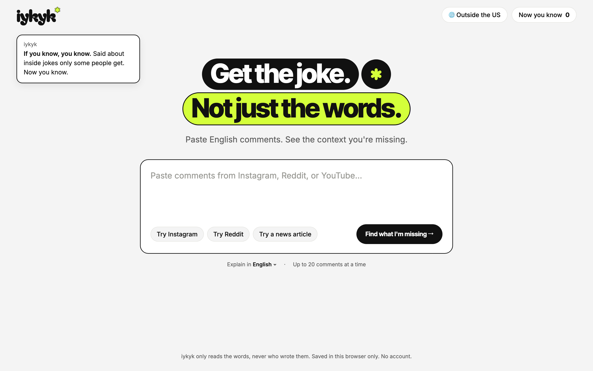
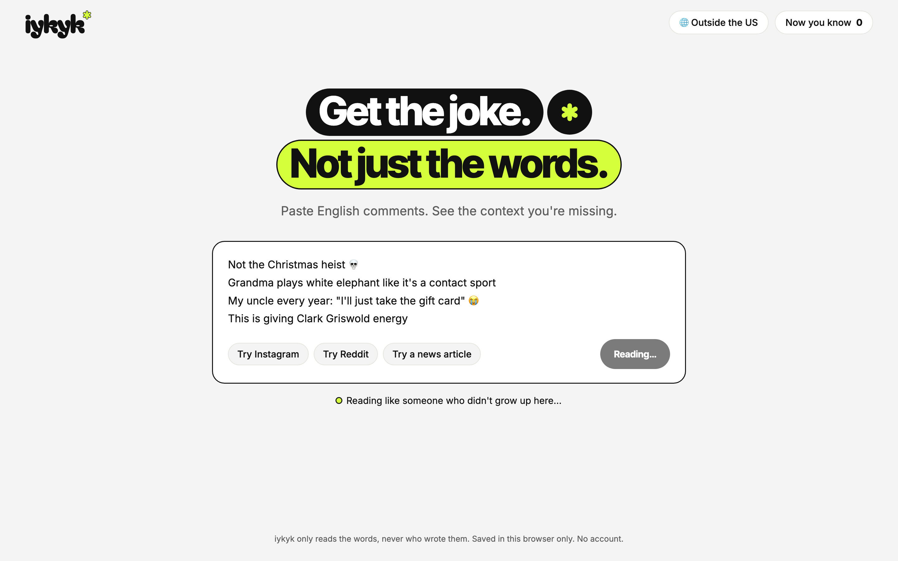
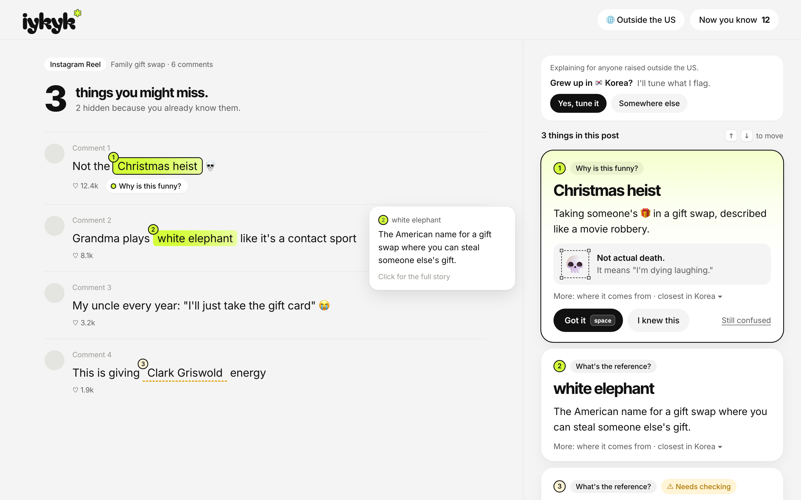
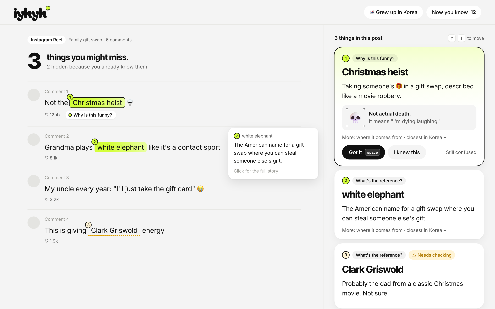
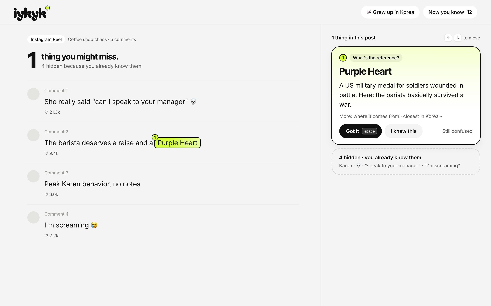
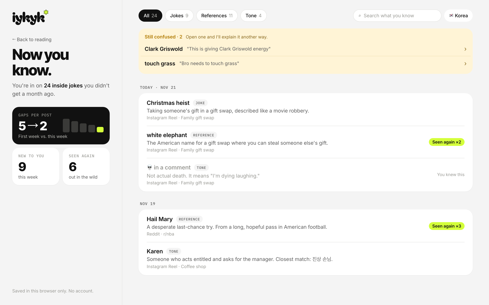

From one pasted comment to a feed that gets quieter the more you know.

Paste comments, or tap an example. No account, no setup.
→
AI reads it like someone who didn't grow up here, and only flags the hinge of each joke.
→
3 things you might miss, every card already open. One question, after the value: "Grew up in Korea?"

Now you know.Got it moves you to the next one. I knew this hides it for good. Still confused becomes a test case.
→
The next post is quieter. 1 thing to miss, 4 hidden because you already know them.
→
Everything you picked up, and the ones you've already seen again out in the wild.